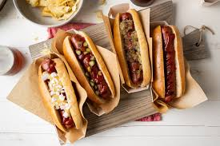

Hot Dogs

Description
These air fryer hot dogs in toasted buns turn out
perfectly crisp in minutes with the help of your air fryer.
Top with ketchup, mustard, relish, chili, or condiments of choice
Ingredients
Steps
- Preheat Oven to 200 Degrees
- Place buns in a single layer in the air fryer basket
- Cook in the preheated air fryer until crisp, about 2 minutes
- Place hot dogs in a single layer in the air fryer basket; cook for 3 minutes